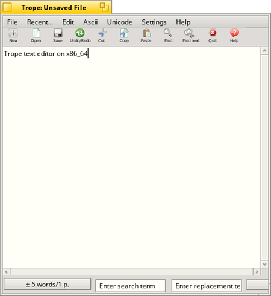

by Michel Clasquin-Johnson
Trope is a text editor with easy access to high-ASCII and some Unicode characters. It also serves as the basis for other, more specialised text editors.
Trope2 is the development name for a ground-up rewrite. Once released, it will install as Trope v0.9
Written in yab using the Yabadabbadoo IDE
MIT-Licensed software
Dependencies: yab aspell perl sed awk python
